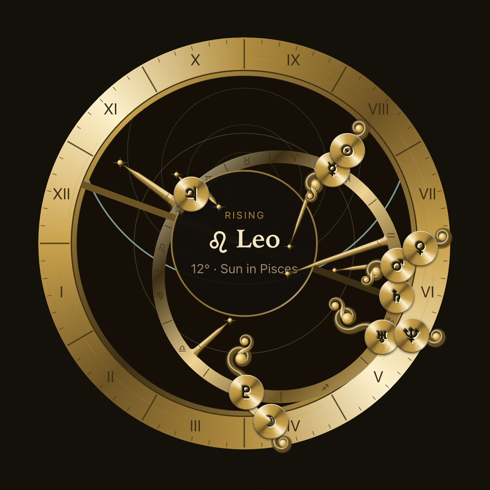

Your Path, Cast in Metal
Laid Out From Your Rising Sign, Not Your Sun.
Most horoscopes start from your sun sign. This chart starts from your rising sign instead, the sign coming up over the horizon at the minute and place you were born, and counts every house from it. That's how whole-sign houses work, the oldest way of reading a chart.
If the sign on your wheel isn't the one you expected, that's not a mistake. It's the more personal one.
Free, and laid out from your rising sign, not your sun
Today's reading, free, from your whole chart
A Working Instrument, Engraved in Brass.
An astrolabe is the oldest computer built for the sky — a brass instrument astronomers and navigators turned by hand for over a thousand years to read the positions of the stars.
Cast your chart and it's struck the way the instrument always was: the houses cut into the rim for the place you were born, the sky over your own latitude engraved on the plate, and every planet riding the rete at its true position. Tap a house or a planet to see what's there.

Your birth date, time, and place, struck on the plate
More Than Ten Planets.
Alongside the ten planets and the four angles, your chart places the North Node, Chiron, and Black Moon Lilith, each with its sign, its degree, and its house.
A Chart Is Only as Good as the Sky It Was Cast From.
The planets in yours come from VSOP87, the planetary theory published by Bretagnon and Francou at the Paris Observatory — all but Pluto, which the theory doesn't reach and which keeps orbital elements of its own. The Moon comes from the published lunar theory that goes with it. Neither was typed in from memory and taken on trust — the planets are generated straight from the observatory's own data files.
Then we checked them against an independent ephemeris, a source with no reason to agree with us: nearly half a million positions across the last century, every planet sampled every day and the Moon more often still. Chiron crosses two planets' orbits, so no tidy formula holds it; its positions come from JPL's own tracking. Every body in your chart lands within a fiftieth of a degree. The Sun and the seven planets the theory covers land within a hundredth.
Six Parts of a Life, Read From Your Own Chart.
Purpose, love, friends, career, home, and spirit. Each one shows the sign and the planet that rule it, one word for what it asks of you and what that word means, and a horoscope for the day, the week, the month, and the year. All of it is free, and it's read from your whole chart rather than your sun sign alone.
Every reading is free, for all six
Watch the Real Sky Move Around a Chart.
A birth chart holds still inside the zodiac band while the actual sky runs past it, at anything from a day to a year each second. A line lights up the moment a moving planet makes an aspect to one in the chart, and when two planets meet, they pass each other the way they do overhead.
Or take a single day at the birthplace and watch the zodiac and the planets turn through the houses, minute by minute, pausing on the minute of birth. It all runs in your browser, on a tablet or a computer.
On a tablet or a computer
Nothing You Type Leaves Your Device.
Your chart is worked out right in your own browser. Your birth date, time, and place are never sent to us or to anyone else, and even finding your birthplace runs on your device. There's no account to make and no password.
On Your Home Screen, With or Without a Signal.
On an iPhone or iPad, open the chart page, tap Share, then Add to Home Screen. On Android, choose Install when your browser offers it. It opens like an app, and once it's there it works with no signal at all.
None of this predicts your life.
It describes you precisely enough to steer by — so the paths you choose are the ones most likely to fulfill you.
The Look of Dye in Cloth, Held by a Pale Wax-Resist Line.
Every sign rendered in a warm, wax-resist batik style — digital art, created skillfully under the close, wash-by-wash direction of a real-life artist's eye, not left to run on its own. Worth exploring on their own, and available as real prints on real paper.
Astrology, Made Tangible.
Your Sign, Off the Screen and On the Wall.
Any of the twelve signs, printed to order on your choice of five papers and shipped to you flat. Every print keeps the proportions the art was drawn in, so nothing gets cropped to fit.
Any of the twelve signs, in any of the three sizes, on any of the five papers
Ships to addresses in the United States. Checkout is handled by Stripe, and each print is made and mailed by our print partner.
5% of Print Sales, to Carbon Removal.
Studio New Moon is a member of Stripe Climate. On every print ordered, 5% of that Stripe transaction funds permanent carbon removal — not offsets.
Opens Stripe Climate's page for Studio New Moon